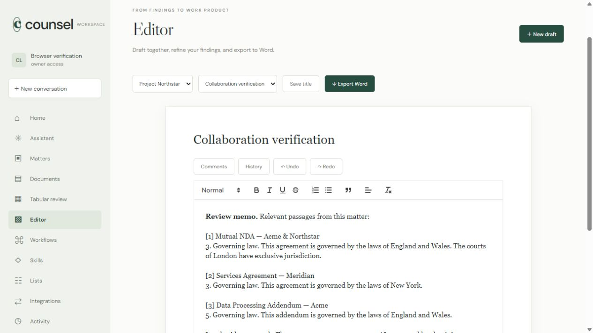
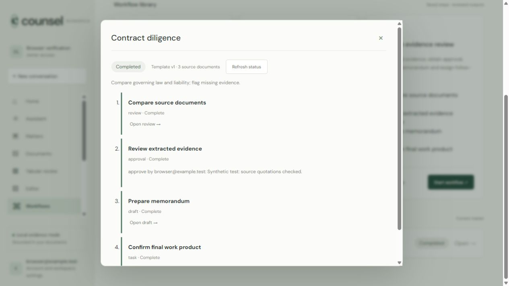
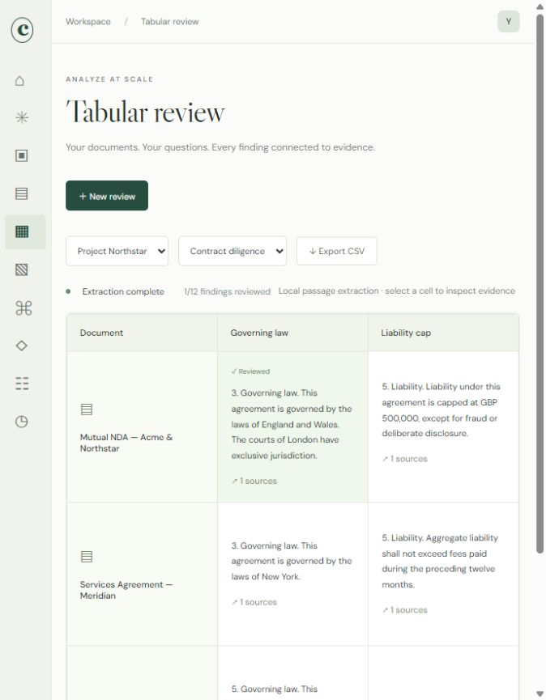

Evidence first
Deterministic clause anchors, metadata extraction, BM25-style passage ranking and exact source offsets. No model call unless you configure one.
Open source · Self-hosted · Apache 2.0
Contract review, research, drafting and collaboration on your own machine. Apache 2.0, no seat fee, no required model API.
Free to inspect, run and modify. Not legal advice.

Four stages. No handoff to a separate review, drafting or research tool.
Import PDF, DOCX, TXT, Markdown or CSV files. Keep originals, extract text, and anchor findings to pages and paragraphs. Optional local OCR extracts scanned pages with source anchors.
Search ranked passages, extract clause anchors, and review findings in a table with visible evidence, locks, filters and CSV export.
Search Federal Register and eCFR sources, watch publications, draft with citations, and compare versions with highlighted changes and DOCX revisions.
Run approval-gated workflows, schedule recurring work, publish selected material to a guest portal, send signed notifications, and export a checksummed matter archive.

Exact offsets, visible evidence and conservative abstention. The default mode does not invent an answer when the source is not there.

Deterministic clause anchors, metadata extraction, BM25-style passage ranking and exact source offsets. No model call unless you configure one.
33.98% answerable-only token F1 and 77.05% answerability balanced accuracy on a document-disjoint CUAD validation split.
Read the method and limitsConnect Codex, Claude Code or another MCP host with expiring, revocable keys.
npm run mcpLocal Ollama, an OpenAI-compatible endpoint, Anthropic or OpenAI. Or no model at all. Passages leave your machine only when you enable a provider.
The retrieval benchmark is synthetic and was designed alongside the implementation. It is a regression check, not held-out evidence. The CUAD split is small and the validation partition is no longer fresh.
Portable by default
Owner and editor exports include a manifest, per-file SHA-256 checksums, readable source text, structured records, a capped audit subset and optional retained originals.
Checksummed, not encrypted or signed. Owners can restore an archive as a new matter; restores never run jobs, re-enable schedules or re-watch sources, and audit rows are not restored. This is a matter export, not a workspace backup.
How archives worknpm run verify:archive -- counsel-matter.zipThis is an independent project with a smaller scope. Legora has broader enterprise integrations, commercial support and a vendor-hosted model. No blinded legal-quality comparison has been run, so treat the rows below as orientation, not a scorecard.
| Dimension | Counsel workspace | Legora |
|---|---|---|
| Price | Free, Apache 2.0 | Commercial subscription |
| Hosting | Your computer or server | Vendor-hosted |
| Source | Public and inspectable | Proprietary |
| Data location | Your infrastructure | Vendor infrastructure |
| Models | Local, bring-your-own, or none | Vendor-managed |
| Enterprise integrations | Limited connectors; no iManage or NetDocuments adapter | Broader DMS, Word and enterprise surface |
| Support | Community, best effort | Commercial support |
| Scope | 0.1, single instance | Broader commercial platform |
Based on public materials as of October 2026. Features and pricing change. Legora is a trademark of its respective owner. Counsel workspace is independent and not affiliated with, endorsed by, or sponsored by Legora.
A working 0.1 preview with tests, limits and no independent audit. Read the security policy before putting client material in it.
Read the security policy, the threat model and the verification record. The operator is responsible for TLS, host hardening, backups and account administration.
Personal mode runs on one computer with synthetic seed data. Node.js 24.15 or newer. Docker is optional.
git clone https://github.com/mehbul/counsel-workspace.git
cd counsel-workspace
npm ci
npm run start:personalOpen 127.0.0.1:3000. Loopback only, for one trusted computer and operating-system account.
cp .env.example .env
# Set DOMAIN in .env
docker compose --env-file .env up -d --build
Create the owner with the one-time token in
data/bootstrap-token. Put the app behind HTTPS.
Tagged releases publish
ghcr.io/mehbul/counsel-workspace.
Model generation is off by default. Enable local Ollama or a provider when you choose. Cloud providers receive the passages you send and may charge for use.
Yes. The source is Apache 2.0 and there is no hosted account, seat fee or telemetry. You pay for your own hardware and for any model provider you choose to connect.
No. The default AI_PROVIDER=evidence makes no model
calls. It uses deterministic clause anchors and passage ranking.
Local Ollama and bring-your-own OpenAI-compatible, Anthropic or
OpenAI generation are optional.
It is an independent alternative for people who want a smaller, self-hosted workspace. It is not affiliated with Legora, has a narrower integration and support surface, and has not been compared in a blinded legal-quality study. If you need enterprise DMS sync, SSO or commercial support, a commercial platform may fit better.
It is built for self-hosted confidential work, but it is a 0.1 preview with no independent security audit. Put it behind HTTPS, restrict access, encrypt storage and backups, configure retention, and follow your professional obligations. Read the security policy and disclaimer first.
It is evidence-first, not a promise of legal accuracy. On a document-disjoint CUAD validation split, the clause engine scored 33.98% answerable-only token F1 and 77.05% answerability balanced accuracy. The retrieval benchmark is synthetic. Verify every output against the source.
Yes. Owners and editors can export a matter as a ZIP with a manifest, SHA-256 checksums, readable source text, structured records and optional originals. Archives are checksummed, not encrypted or signed. A workspace owner can restore an archive as a new matter; imported jobs never run, schedules and research watches come back disabled and audit rows are not restored.
It imports and exports DOCX, exports revisions and supports tracked insertions through an Office bridge. Tenant-installed Word or Outlook add-ins and full in-place tracked-change interoperability are not implemented.
The project is community-maintained on a best-effort basis. There is no commercial support, service-level agreement or bug bounty. Security reports go through GitHub private advisories.